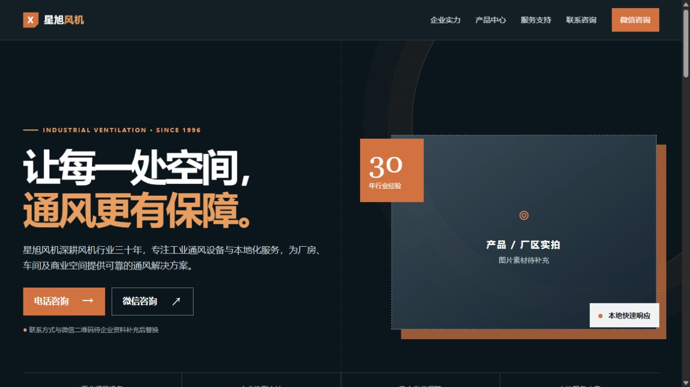
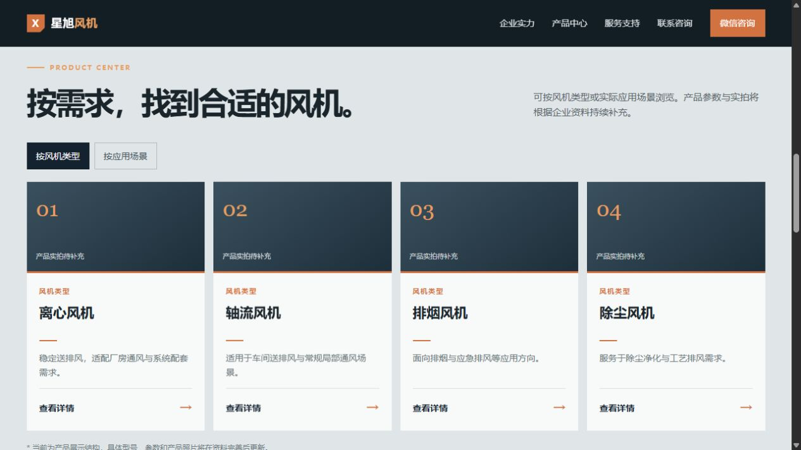

Project Goal
从学习练习走向真实需求
把企业介绍、产品浏览与咨询引导整理为清晰的单页体验，为后续补充真实产品资料预留稳定的页面结构。
Project Goal
把企业介绍、产品浏览与咨询引导整理为清晰的单页体验，为后续补充真实产品资料预留稳定的页面结构。
Tech Stack
使用原生 Web 技术实现页面结构、产品数据渲染和响应式导航，保持首版轻量且易于维护。
Core Features
功能重点放在可理解的产品展示路径与不同设备屏幕上的浏览体验。
将企业定位、服务方向、产品入口和行动按钮组织为层次明确的首页内容。
支持按产品类型或应用场景浏览，并通过统一的数据结构生成产品卡片与详情页内容。
为导航、产品网格和重点操作提供窄屏布局，让手机端也能完成顺畅浏览。
首版建立咨询入口与交互区域的页面结构；不在本成果页公开企业联系人、地址、账号或未确认资料。
Public Preview
截图仅展示首页与产品筛选区域，不包含电话号码、地址、微信账号或联系人信息。

